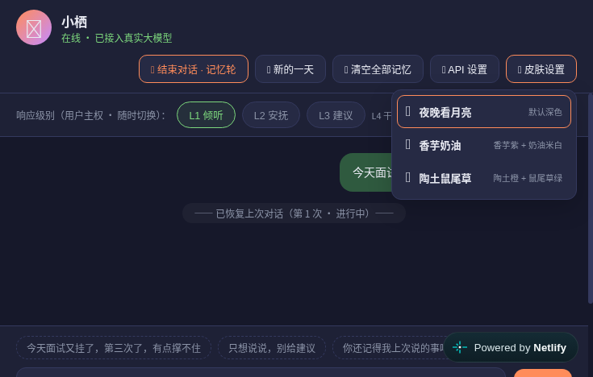
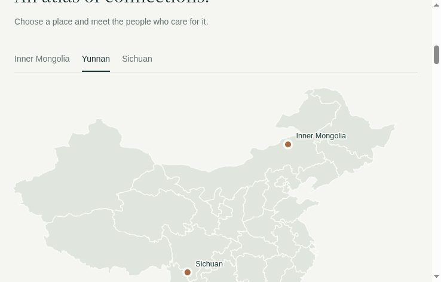
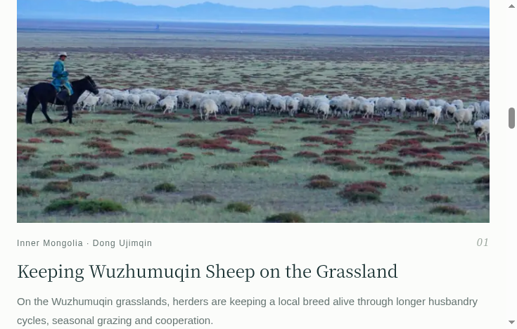

产品作品 · 年表
2026 年，从第一个产品开始，一个月一个脚印。
2026.07
StepForward（步步向前）
主力作品 · 持续迭代中
AI 任务拆解 × 情绪陪伴 · 独立产品负责人
当你动不起来的时候，先接住你的情绪，再陪你慢慢启动。从 0 到 1 主导产品全流程：v1.0 → v2.2.8，20+ 版本。
- 🧠 多 Provider AI 架构（OpenAI 兼容 + Anthropic 双协议），分场景匹配模型，单次拆解 token 实测降 40-60%
- 🎭 同一个 AI，五种人格：幕僚 / 会夸你的好朋友 / 知心陪伴者 / 笔友 / 晚安疗愈师
- 🛡️ 安全边界：24 关键词硬编码 + AI 辅助识别，接入 3 条 24h 援助热线
 拆解 · 幕僚
拆解 · 幕僚 情绪 · 陪伴者
情绪 · 陪伴者 晚安信 · 陪伴者
晚安信 · 陪伴者2026.09
小栖 · AI 陪伴机制演示
机制演示
把「AI 陪伴怎么做才安全」做成可玩的机制
人设锚 + 事件化记忆（删除有反向链路）、L1-L4 响应路由（用户主权切换，L4 危机干预自动触发）、击穿拦截、成本估算，3 款换肤；Netlify Function 代理藏 Key。
 L1-L4 响应路由
L1-L4 响应路由
3 款换肤2026.10
ListentoMe · 精听练习
持续迭代中
把「听不懂」练成「听得懂」的精听工具 · 独立产品人
导入任何英文材料，自动切成语块，一句一句地听、跟读、标记，直到真的听懂。
- 🔁 精听闭环：导入 → 切分 → 精听 → 跟读评分 → 复习，跨会话自动续听
- 🔒 本地优先 + PWA 离线可用，PDF 本地解析不上传
- 🧱 零构建纯前端，localStorage 分版本 schema，MVP 冻结后按账本小步迭代
▶展开 · 使用过程演示（自动播放）


① 导入材料粘贴文本或选本地 PDF
② 切分语块自动切分，可手动微调
③ 逐句精听播放 · 跟读 · 录音评分
④ 标记复习难句进复习队列，续听不断
2026.10
蟲鸣岛
已上线
中英双语 · 生态生活杂志站
故事地图 × 商品 × 活动日历 × 订阅。Supabase 后台（管理员白名单 + RLS），三级数据降级（缓存 → 数据库 → 本地 JSON），断网也有兜底。
 首页 Hero
首页 Hero
故事地图
故事列表未来
持续更新中 · 下一个作品在路上